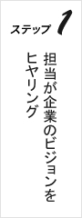
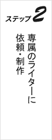
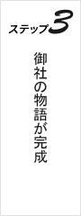
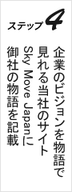
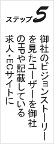
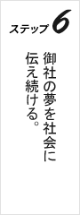

- 
- 
- 
- 
- 
- 
駅から程近い桜並木が続く遊歩道。例年なら見頃を迎える筈の桜が今年は開花が一週間程早く、もう花弁を舞い散らせ緑の葉っぱが目立つ様になっていた。
そんな桜の花弁舞い散る中、桜並木には目もくれず着慣れないリクルートスーツ姿の指宿が遊歩道を歩いている。
指宿は眉間に皺を寄せ、難しい表情を顔面に貼付けながら合同企業説明会と書かれた封筒を小脇に抱えている。
就職氷河期といわれる様になって久しい昨今。あと数日で大学４年を迎える指宿は厳しい就職戦線に遅ればせながら参戦すべく所謂「就活」を始めたばかりだった。指宿は遊歩道沿いにある昭和の佇まいを残した喫茶店「倫敦」の前にやって来ると勢い良くドアを開ける。
この店は二ヶ月前まで指宿がバイトとして働いていた所だった。指宿は「就活」を理由にバイトを辞めた今でもちょくちょくこの店に顔を出していた。
店に入ると客と呼べるものはカウンター席に若い青年が一人いるだけで店内は閑散としていた。
店内に流れるコルトレーンのサックスがさらにこの店の雰囲気を物悲しくしていた。
「いらっしゃ…何だお前か？そんな七五三みたいな格好してるから誰だか分かんなかったよ」カウンターでグラスを洗っていたマスターがいつもの様に憎まれ口を叩きながら笑顔で指宿を迎える。
「何だはないでしょ！それに俺だって好きでこんな格好してる訳じゃないですよ」そんなマスターの対応に指宿も遠慮する事なくあからさまに不機嫌な表情を向ける。
そのまま指宿はカウンター席の端っこに腰を下ろすといつもの様にブレンドを注文する。
「どうしたんだよ？難しい顔しちゃって」
「いや?、ついさっきまで就活で合同企業説明会ってのに参加してたんですけど…何かこう…違うんですよね」とマスターに愚痴りながら指宿はふと、カウンター席で美味そうに珈琲を飲んでいる青年に視線を移す。
青年はTシャツに洗い晒しのコットンシャツを羽織り、少しダメージのかかったジーンズに雪駄というラフな格好をしていた。
指宿の目には彼の風情がいかにも就活に失敗して仕方なくフリーターを始め、数年前経った今では完全に就活を諦め、逆に開き直って自分探し中といった感じに映った。
そんな青年を指宿は、いい若いもんが昼間っから茶店でブラブラして勘違いしてんじゃねぇぞ、と自分の事は棚に上げて青年に対する嫌悪感を剥き出しにしていた。そこにマスターが淹れ立てのブレンド珈琲を持って指宿の前に差し出す。
「違うって何が？」
「えっ、何ていうか…」
指宿は視線を青年からマスターに戻すと今出されたばかりのブレンド珈琲を一口啜る。
「今日の合同説明会もそうなんですけど就活始めてから色んな会社の説明会で話聞いたり、ホームページ調べたりしてるんですけど、その会社の歴史とか過去の実績とかそういうのも確かに大切なんですけど…その会社が今後どんな事していきたいとか数年後どんな企業になりたいとかっていう…ビジョン？俺はそういう会社それぞれの持ってる今後のビジョンを見たり聞いたりして、この会社の一員になりたいとかそこで示された目標を一緒に達成したいとか思って自分が就職する会社を決めたいのにどこの会社も同じ様な感じで来年の売上げがどうとか…俺が聞きたいのはそんな事じゃなくて、何ていうか…」
勢い込んでマスターに自分の思いの丈をぶちまけたは良いが一気に捲し立てすぎて自分の考えを纏められずに指宿は黙ってしまう。
「ワクワクしない…」
「そう！…そうだ全然、ワクワクしないんだ！えっ？」
指宿は突然、自分へと投げかけられた言葉に驚いて声のした方を見る。
声の主は先程、指宿が軽蔑の眼差しを向けていた青年だった。そして、彼はまた美味そうに珈琲を一口飲んだ後、話を続ける。
「多くの日本企業はビジョンと聞くとさっき君が言ったように売上目標や企業理念のような、つまらなくて退屈な事ばかりイメージして口に出す。その反面、企業は高いビジョンを持った人材を求めている。でも個人が高いビジョンを見つけるのは難しい。
だったら高い目標やワクワクするようなビジョンを企業側が掲げて社員一人一人のビジョンを引き上げるべきだ！…だろ？」
青年は微笑みながら指宿の方に視線を向ける。指宿は彼に向かって力強く頷く。そして、残りの珈琲を一口に飲み干すと青年は徐に立ち上がり、ゆっくりとした足取りで指宿の方へと歩み寄る。
「まさにそれこそ我が社がこれからやろうとしている事なんだ！」と言った後、青年はシャツの胸ポケットから名刺を取り出し、笑顔で指宿に差し出す。
指宿は彼に差し出された名刺を受け取るとマジマジと名刺を見つめる。名刺には「aaaaaaaaaaaaa CEO 陣内 左近」と書かれている。
「君、名前は？」
「指宿 吾郎です」
「じゃ、指宿君。今からちょっと時間ある？」
「えっ？ま、大丈夫ですけど…」
「もし良かったら今からウチの会社見においでよ」
「えっ？」
陣内からの突然の申し出に指宿は戸惑いを隠せずにいた。指宿は陣内と名乗るこの青年の持つ不思議な魅力に強く惹かれていた。
当初、将来の展望を持たない若者の代表の様に思っていたこの青年が企業のＣＥＯつまり最高経営責任者の肩書きを持っている。そして何より指宿は彼の言葉に何か人をワクワクさせる特別な響きを感じていた。
指宿は陣内に連れられて彼の会社に向かうべく喫茶「倫敦」を後にして、桜舞い散る遊歩道をさらに奥へと歩いていった。暫く歩くと陣内が急に立ち止まり、満面の笑顔である建物を指差す。
「就活で忙しいのに悪かったね、ここだよ」
「えっ…ここ？」
指宿は彼の示す先に佇む建物を見て呆然とする他なかった。それは指宿の想像していた会社のイメージとは程遠い建物だった。そこに建っていたのは、昭和の香り漂う築４０年以上は経つであろう木造２階建てアパート。風呂無し、共同トイレ、共同玄関の御世辞にもオフィスとは呼べない所謂ボロアパートだった。
「さ、遠慮しないで。どうぞ、入って」
「えっ…は、はい…」
指宿は戸惑いながらも陣内に促されるまま、あけぼの荘という表札が掲げられた玄関先を抜けて建家内に足を踏み入れる。
「そこで靴脱いで、さぁ遠慮なく」
「は、はぁ…」と指宿は所在なさそうに玄関で靴を脱ぎ、彼の後をついて行く。
そんな指宿を尻目に陣内は玄関横の階段を上がり２階へと向かう。
建家内は昼間でも薄暗く何か妙に静かで薄気味が悪い。指宿は警戒心と嫌悪感を露にしながら陣内の後について階段を上がる。そして、歩く度ギシギシと今にも床が抜けそうな音を立てる２階廊下を恐る恐る歩いて行く。
２階の一番奥に位置するドアに辿り着くと陣内はジーンズのポケットから古びた鍵を取り出し、ドアに掛けられた南京錠を手慣れた手付きで外す。
「ようこそaaaaaaaaaaaaaへ！」と陣内は勢い良くドアを開ける。
彼がドアを開けたその先には申し訳程度のキッチンが着いた６畳一間、中央にちゃぶ台が鎮座する完璧な昭和空間が広がっていた。
「これがaaaaaaaaaaaaaのオフィス…？」
指宿はその見事なまでに古びた空間を目の当たりにして再度呆然と立ち尽くす。
ドアを開けた正面、部屋の奥に位置する窓の向こうでは桜並木が盛大に花弁を舞い散らせ、この昭和空間とマッチした春の絶景が広がっている。
「今、お茶淹れるからそこ座って」
「は、はぁ…」
指宿は後ろ手にドアを閉めると陣内に促されるまま、窓を背にしてちゃぶ台の前に正座する。落ち着かない様子で指宿が部屋を見回すと室内には家具と呼べるものがちゃぶ台の他には何もない。
陣内が立っているキッチンの丁度裏側に据えられた押し入れの襖が何故か全開になっている。そして、押し入れの上段にノートパソコンや電話、本棚が収められている。さらにその下段にはキャスター付きのキャビネットとこれもキャスター付きの古い事務椅子。
恐らく、陣内はこの押し入れを自分用のデスクとして使用しているのだろうと指宿は推測した。
まさか本当にこれがaaaaaaaaaaaaaのオフィス…？これじゃまるで昭和の貧乏学生が住んでるただのボロアパートじゃないか、と指宿は落胆の表情を隠せない。そこへお茶を持ってやった来た陣内がちゃぶ台を挟んで向かい側に座り、指宿にお茶を差し出す。
「ガッカリした？」
「えっ？…いや…」
「君がそう思うのも無理ないよ。いきなり、あんな名刺出されて会社見に来いって言われたら誰だってこの人物はＩＴ関連企業のトップでその企業のオフィスに連れてかれるんだって思うよ。
で普通、ＩＴ企業のオフィスっていうと今時のオシャレな建物の中に最新の設備が備えられた空間をイメージする。でも、ここはどうだ？御世辞にもオシャレな建物とは言えないし、電話とノートパソコンが１台づつあるだけで設備らしい設備も整ってない。さらにそこでバリバリ働いている筈の優秀な社員達も何処にもいない」と陣内は指宿の目を真っ直ぐ見ながら楽しそうに話す。そんな彼の勢いに押されて指宿は所在なさそうに俯く。
「いや…まぁ…」
「でもねぇ、我がaaaaaaaaaaaaaはこの春生まれたばかりの会社だ。だから今はまだ今時のオシャレな社屋も最新の設備が備えられた空間もそこでバリバリ働く何百人もの優秀な社員達も必要ない。今はこの古びたボロアパートと電話とノートパソコンが１台あれば十分だ。それに何より、僕はこの空間がとても気に入っている。この昭和の匂いが充満した部屋にいるとすごく落ち着くし、アイデアが溢れ出て来る。だから僕は君と出会ったあの喫茶店も大好きで仕事の合間に時々、足を運んでるんだ」と目をキラキラさせながら話す陣内を見て指宿はどこか自分と似たものを感じ、彼の言葉に強く頷く。
「そうなんですよね。あの店何か落ち着くんですよね。僕あそこでバイトしてたんですけど辞めた今でも何かちょくちょく顔出しちゃうんですよ」
「きっと、僕等はこの部屋やあの店の醸し出す昭和の匂いに今の時代にはない情熱とかパワーとか、あと優しさみたいなものを感じてるんだろうね」
「そうかもしれませんね…」と２人してしみじみとお茶を啜る。そして、指宿はここに来るまでの間中一番気になっていた事をやっとここで陣内に切り出す。
「で…この会社、何の会社なんですか？」
桜の花弁舞い散る遊歩道沿いに佇む昭和の匂い漂う古びたアパートあけぼの荘。その２階に位置する、これまた昭和の匂いが充満した６畳一間をオフィスとして構えるaaaaaaaaaaaaa。その会社のＣＥＯ所謂最高経営責任者と名乗る不思議な魅力を持った青年陣内に連れられ、ここを訪れた就活生指宿は「この会社は何の会社なのか？」という一番基本的な質問を何故かこのタイミングで彼に切り出す。
すると陣内はさらに目をキラキラさせながら笑顔でこう答える。「ゴメン、まだ話してなかったっけ？僕等の世代は長い不況の中で育ったせいで大人達から現実を直視する事や社会の厳しさみたいな事ばかり聞かされてきた。だから、僕等はただ毎日を生き延びるために勉強や仕事に励む事が当たり前で大きな夢や目標を持つ事は二の次っていう感じで暮らして来た。ある時、何か今の日本っていう国全体がそうゆう状態になっちゃってるなぁって僕は感じたんだよね。でも実はそれって逆で、厳しい時代だからこそ人には夢や希望のある高い目標やワクワクするようなビジョンを持つ事が必要なんだって思ったんだ。でも今の日本企業の多くは今日君が会社説明会で感じたみたいにビジョンっていうと売上目標や企業理念のような退屈で魅力のない事しか言わない。
それじゃ今、就活に励んでいる君達のような若い人材はどの会社を選ぶかをその会社の過去の実績だけで判断して選択するしかない。そんなのワクワクしないだろ？」
「はい、僕も何度か会社説明会に足を運んでずっとそんな風に思ってました。
全然、ワクワクしないなって…でも、どうしたら企業それぞれが持ってる高い目標やワクワクするようなビジョンが聞けるのか…」と指宿は、また考えが行き詰まって口籠ってしまう。すると陣内は徐に立ち上がって押し入れの方へと歩み寄り力強く襖を叩きながらこう答える。
「そこで僕等、aaaaaaaaaaaaaの出番なんだ！」
陣内の叩いた襖の中央にはマジックインキで殴り書きしたaaaaaaaaaaaaaのカンパニーアイデンティティ所謂企業ロゴマークが標されている。「日本企業の多くは高い目標や僕等がワクワクするようなビジョンを持っていない訳じゃない。ただ、今まで僕等がワクワクするような分かりやすいビジョンの見せ方をして来なかったにすぎないんだ。だから僕はこれから就活を始める君達若い人材がワクワクする様な分かりやすいビジョンの見せ方をそれぞれの企業に提案する事を考えた。物語の力を使って」
「物語の力…ですか？」
「そう、物語は人の心を惹き付ける強い力を持っている。例えば、歴史の教科書に登場する人物や年号、事柄をただ記憶しようとするのは難しい。だけど物語で見聞きすれば年号、事柄を記憶するだけでなくその人物に魅力を感じ、ひいては歴史というもの自体に興味を持たせる事も可能になる。これを企業のビジョンに置き換えると？…」ある熱を持って語っていた陣内がキラキラとした笑顔になってゆっくりと指宿の方を見る。指宿は陣内の発する言葉の魅力に強く惹かれ彼に向かって大きく頷く。
「その物語を見聞きする若い人材に企業のビジョンだけでなく企業そのものに魅力を感じさせる事が出来る…」
「そう、僕等aaaaaaaaaaaaaの提案する物語の力を使って企業それぞれがより分かりやすく魅力的なビジョンを君達若い人材や現在そこで働く社員達に示す事で企業そのものに魅力を感じさせる事が出来るだけでなく、企業全体のビジョンも引き上げられる。つまりaaaaaaaaaaaaaはより優秀な若い人材を獲得したいと考える企業と高い目標やワクワクするようなビジョンを持つ魅力的な会社で働きたいと考える若い人材とを物語の力を使って繋ぎ合わせる架け橋となる。ここはそんな会社なんだ」それを聞いた指宿は言葉を失い、ただ心が震えていた。そんな指宿の事は御構い無しに陣内は目をキラキラさせながら、表の襖に隠れていたもう片方の襖を勢い良く引き出す。引き出された襖にはこれもマジックインキで殴り書きされたaaaaaaaaaaaaaの今後のビジョンが標されている。指宿はそこに標された言葉を目の当たりにして、さらに言葉を失い呆然とする。そこにはこんな事が書かれていた。
- ２０１３年４月
- 企業が掲げる将来のビジョンを物語にして企画提案する営業活動を開始。
- ２０１３年６月
- 新卒、転職希望者をターゲットにした企業のビジョン物語サイト「Sky Move」を開設。
- ２０１４年１月
- 契約社数が２５０社を超える。夢や目標を見つけてくれる会社として企業や就職希望者から高く評価される
- ２０１５年１月
- 企業のビジョンストーリーだけでなく、個人のビジョンを物語にした新たなサービスを開始する。
- ２０１５年５月
- aaaaaaaaaaaaaは世界中から注目される企業に成長。
グーグルやフェイスブックと提携、新たなサービスを開始。 - ２０１５年８月
- 多数の外資系投資会社から投資依頼が殺到する。
- ２０１６年５月
- 人と出会えるフェイスブック、情報と出会えるグーグル、物と出会えるアマゾン。
そして夢や目標と出会えるSky Moveとして並び称され、世界中から高く評価される企業に成長。
陣内は一つずつ意思の込もった力強い声で指宿に読み聞かせた後、少し照れた様な笑顔を向ける。
「僕はここに書かれた事を全部実現するつもりなんだ」
「こ、これ全部ですか？」
「どう、指宿君も僕と一緒にやらない？」
「ぼ、僕が…ですか？」
「ま、君には就活もあるし、最初はバイトとしてさ。で、ここが気に入ったら正式に社員として働いてもらっても良いし…とにかくここから始めよう。ここが僕と君とaaaaaaaaaaaaaの歴史の１ページ目になる」
陣内はちゃぶ台の前で小さくなって座っている指宿に歩み寄ると、ゆっくり右手を差し出す。指宿は緊張した面持ちで立ち上がり、震える手で彼の手を握り締める。
「宜しく御願いします！」
続く
aaaaaaaaaaaaa ビジョンストーリー第四話 2013年12月 執筆予定